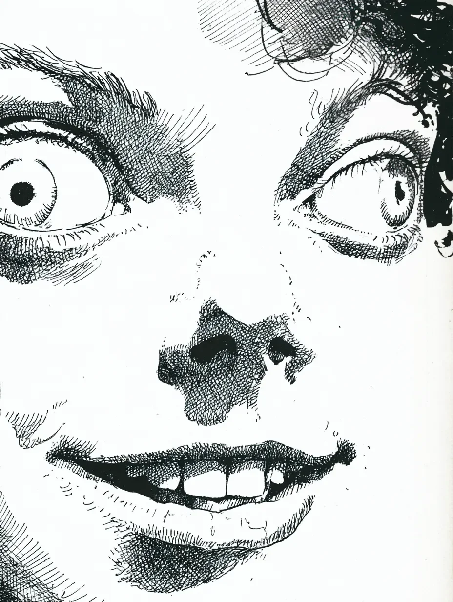

복도 끝에서부터 유리 조각으로 된 노랫소리가 들려왔다, 결코 인간의 목구멍에서 나올 수 없는 소리였다.
From the end of the hall came a singing voice made of glass shards, a sound no human throat could form.
그 소리는 내 정신에 쐐기를 박아 멈춰 세웠지만, 내 몸은 마치 다른 사람의 것처럼 소름 끼치도록 매끄러운 걸음으로 앞으로 나아갔다.
The sound drove a wedge into my mind, halting it, yet my body, like a stranger's, moved forward with unnervingly smooth steps.
천장의 형광등이 발작적으로 터뜨리는 불빛은 내 온전한 걸음걸이를 벽 위에서 절뚝이는 기형적인 그림자로 비틀었고, 그 불빛이 깜빡일 때마다 노랫소리는 달궈진 철사처럼 귓속을 파고들었다.
The spasmodic flare of the ceiling light twisted my steady gait into a lurching, malformed shadow on the wall, and with every flicker, the song pushed into my ears like a heated wire.
마침내 내 몸이 잉크처럼 짙은 어둠 속으로 한 발을 내딛자, 그 멜로디는 목이 졸린 것처럼 끊어졌다.
Finally, as my body took one step into the ink-black darkness, the melody was choked off.
귀가 먹먹한 정적 속에서, 얼굴의 살점을 잡아당겨 만든 듯한 미소와 그 위의 두 개의 희고 둥근 점이 어둠 속에서 떠올랐다.
In the deafening silence, a smile that looked stretched from the flesh of the face and two round, white dots above it floated up from the dark.